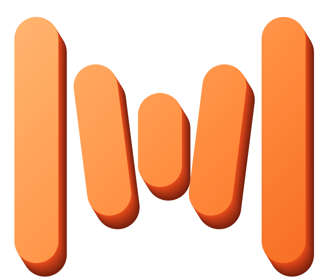
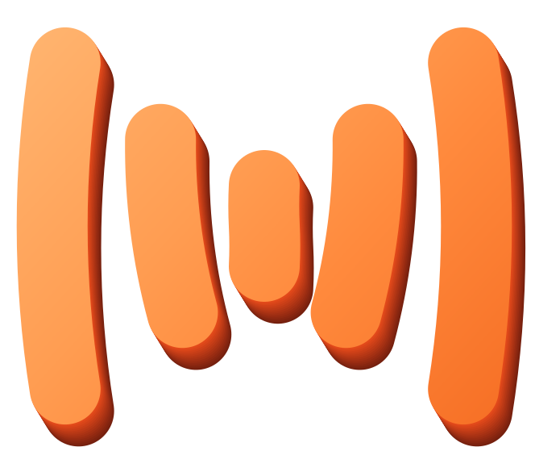
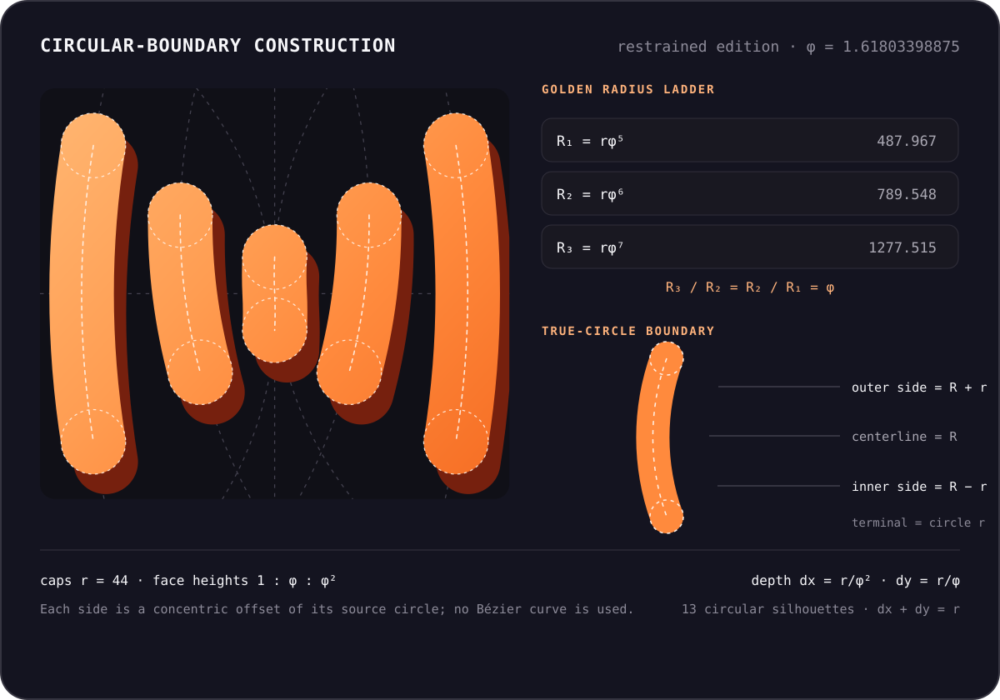
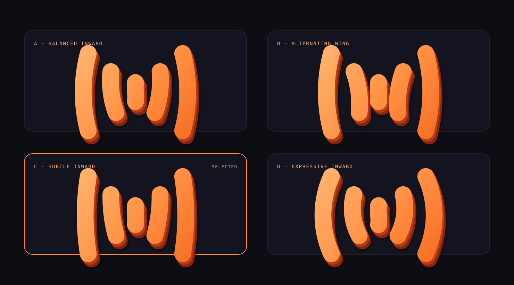

Golden depth.
Circular discipline.
The original 2.5D draft remains intact. This page adds a stricter alternative: its five front faces follow true circle arcs whose centerline radii advance by φ, while preserving the faithful signal, its weight, and its golden depth.
Original / circular-boundary
same proportions · stricter edges
Original 2.5D draft

Circular-boundary alternative

Boundary system
large circles keep the curvature restrained
R₁ = rφ⁵The center S uses a 487.967-unit source radius.
R₂ / R₁ = φInner and outer arc radii rise in exact golden steps.
edges = R ± rBoth sides are true concentric-circle arcs; terminals remain radius-r circles.
Circular construction
no Bézier curves

Curvature study
selected C avoids the ball-like silhouette

Depth system
the radius is divided, not guessed
dx = r / φ²16.807 units of horizontal depth.
dy = r / φ27.193 units of vertical depth.
dx + dy = rThe full extrusion consumes exactly one 44-unit radius.
Circular-boundary lockups
dark / light

Applications
app tile / small sizes
32 / 64 / 128 px